使用Eclipse创建Java项目
1、安装好Eclipse，并启动。
参考文章 https://codinglonglong.github.io/posts/ru-he-an-zhuang-eclipse.html
2、第一次启动会显示这个界面。注意：如果Workspace(工作空间)后面的文件路径中有汉字等非英文字符，点击Browse(浏览)按钮，选择一个全英文路径。
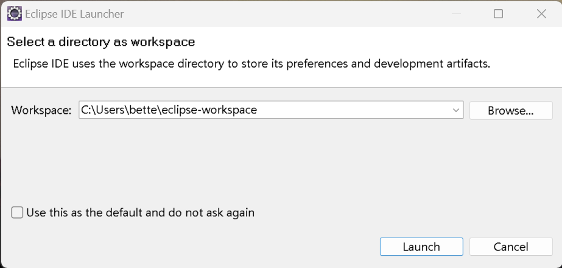3、确保路径中没有汉字等非英文字符后，勾选 "Use this as the default and do not ask again"(使用这个路径为默认，并不再询问)，点击Launch(启动)按钮。
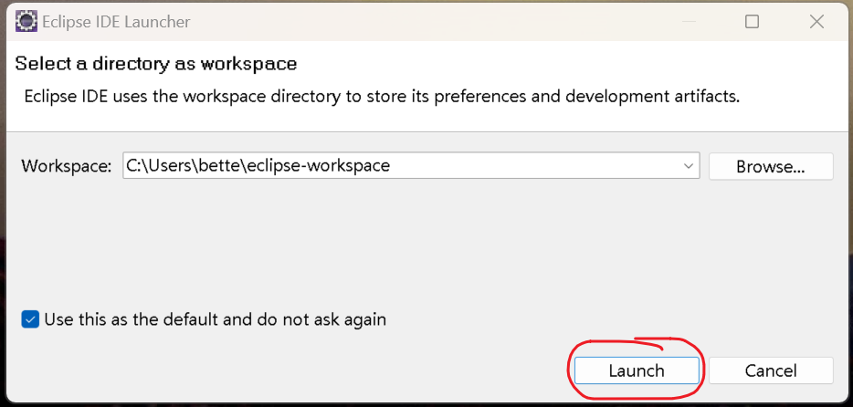4、关闭欢迎界面。
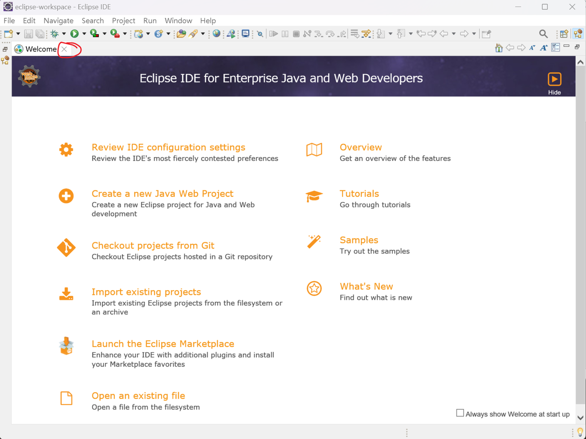5、创建项目。
按标记顺序点击菜单，创建项目。
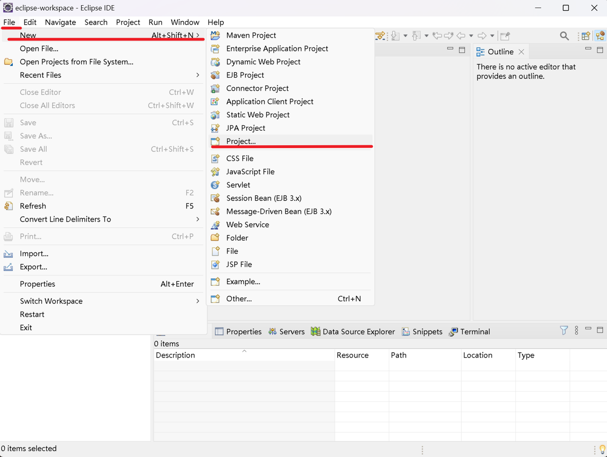6、选择Java Project(Java项目)，点击Next(下一步)按钮。
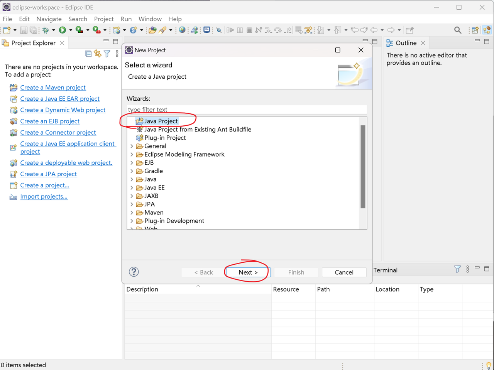7、
红色圈部分输入项目名，随意起名字，要求全是小写字母。
紫色圈部分如果包含汉字等非英文字符，去掉Use default location(使用默认路径)前面的勾，点击Browse(浏览)按钮，选择一个全英文路径。
蓝色圈部分，去掉Create module-info.java file前面的勾。
点击Finish(完成)按钮。
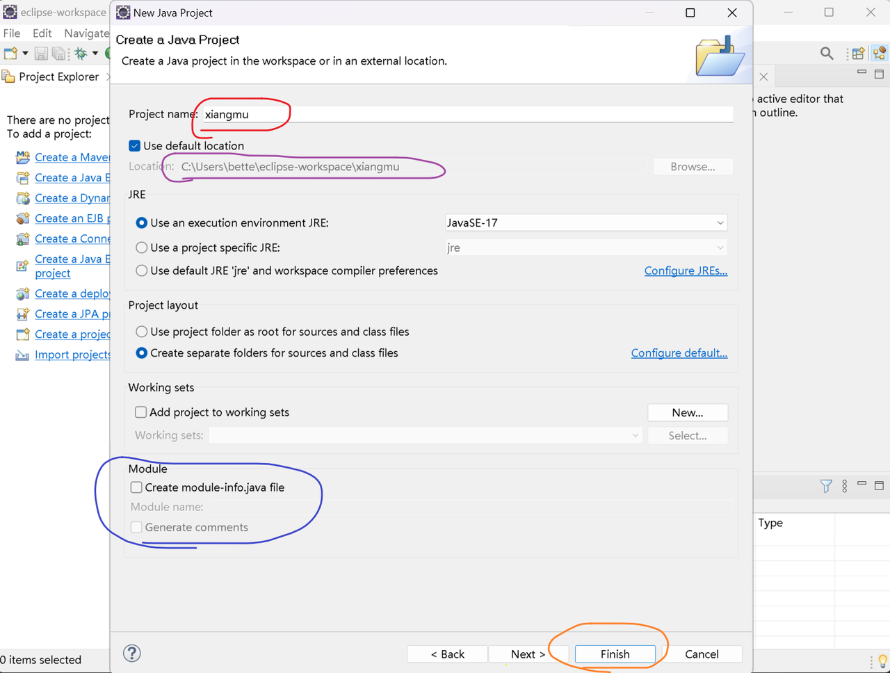8、点击Open Perspective按钮。
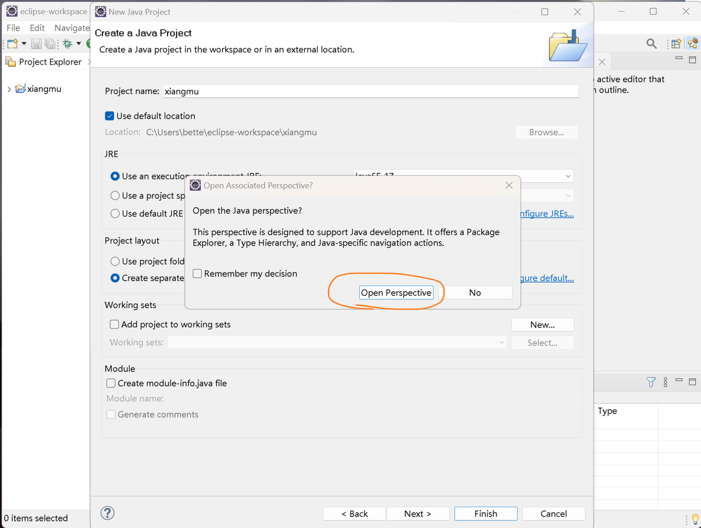9、点击项目文件夹左侧的箭头。
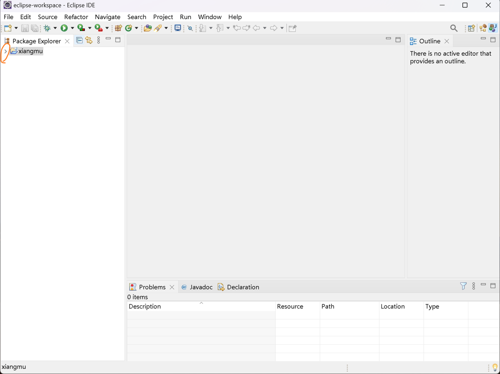10、创建class(类)文件。
右击src文件夹，按标记顺序选择菜单，创建类文件。
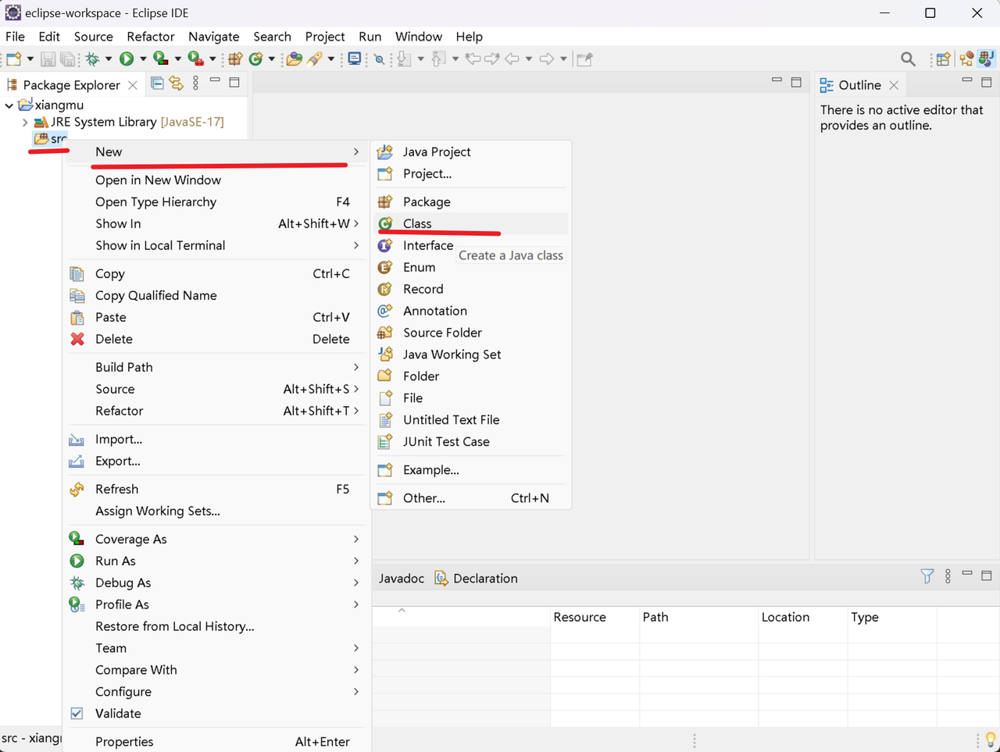11、
红色圈部分输入类名，随意起名字，要求首字母大写。
点击Finish(完成)按钮。
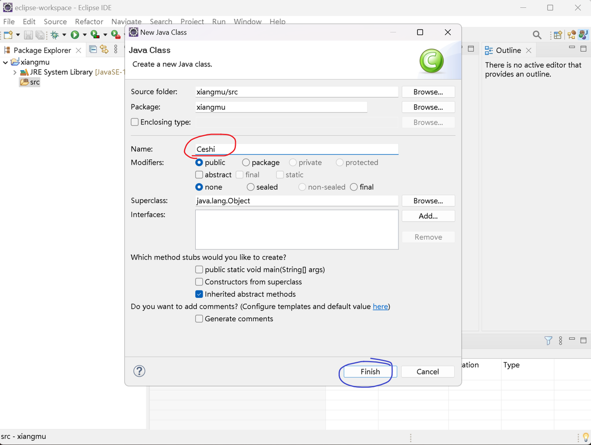12、可以看到Eclipse为我们自动生成了部分代码，后续就可以在Ceshi.java里写我们自己的程序了。
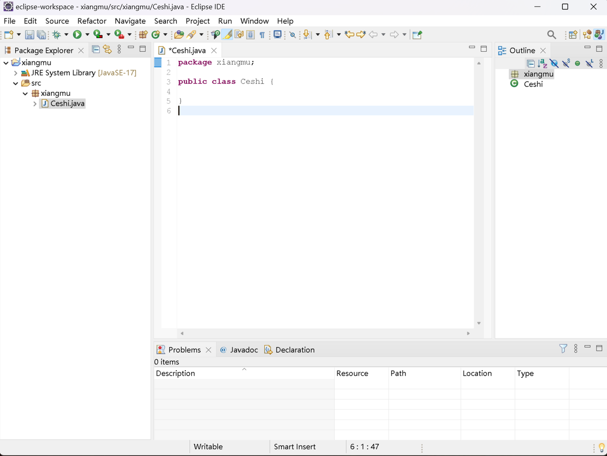13、注意红色圈部分的单词是一致的，蓝色圈部分的单词也是一致的。注意：由于这部分单词是刚才创建项目时在对话框中给定的，每个人起的项目名和类名可能不同，所以这里生成的也会不同，按照上课内容或其他人的笔记整理代码的时候，不要把这部分自动生成的单词改掉。
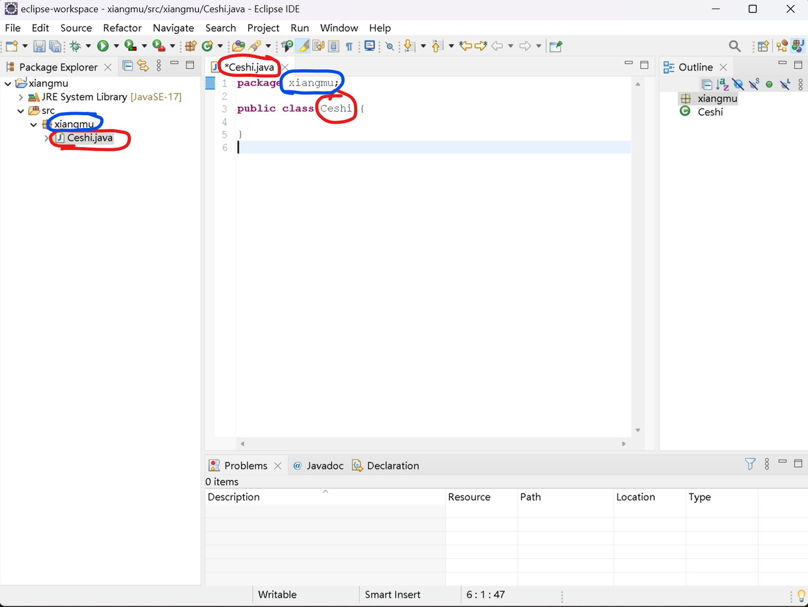